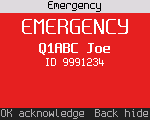

紧急
不要依赖告警和紧急呼叫来保障安全。电台参考说明每款电台已经检查过什么。
他人发起紧急时
当电台听到紧急告警，或播放了标记为紧急的呼叫——发给你的，或发给你收听的某个通话组——它会打开紧急屏幕并播放提示音（约 1 秒的颤音）。有振动马达的电台还会振动四次，除非关闭设置 > 声音 > 振动。屏幕显示 EMERGENCY 以及该台站的名称或 ID。

| 按键 | 作用 |
|---|---|
| OK | 确认：关闭屏幕（“紧急已确认”） |
| # | 关闭屏幕并打开该台站的操作：与其通话、私密呼叫、电台检查 |
| 返回 | 隐藏屏幕 |
同一台电台在其上次活动后 30 秒内再次发起的紧急（重复告警、随后的呼叫）不会再次触发提示。
发起紧急
电台核心可以发送紧急告警并启动带热麦的紧急呼叫。默认情况下它会发送告警 3 次。然后电台保持发射 10 秒，因此收听的人无需你按 PTT 就能听到你。在你取消之前，你发起的每个呼叫都带紧急标志，并发送到信道的通话目标。热麦期间按 PTT 会接管发射。
长按功率级别键 1.5 秒。屏幕显示“紧急已发送：再次长按取消”。再次长按 1.5 秒取消（“紧急已取消”）。短按同一键仍会切换功率级别。未满 1.5 秒就松开绝不会启动紧急。无法启动时（见下文），电台显示“紧急需要 DMR 信道和 ID”。
只有带功率级别键的电台才能从按键发起紧急。电台参考说明哪些电台有该键。
开发者也可通过调试链路启动和取消：
tools/rfoundry_debug.py data emergency start
tools/rfoundry_debug.py data emergency cancel
模式（仅告警、先告警后呼叫、仅呼叫）、目标、告警次数和热麦时间也用同样方式设置（tools/rfoundry_debug.py data em-settings）。见 docs/spec/dmr-emergency.md。
紧急无法在 FM 信道或 FM VFO、仅接收信道、热点模式中发起，也不能在没有 DMR ID 时发起。DMR VFO 的行为与 DMR 信道相同。